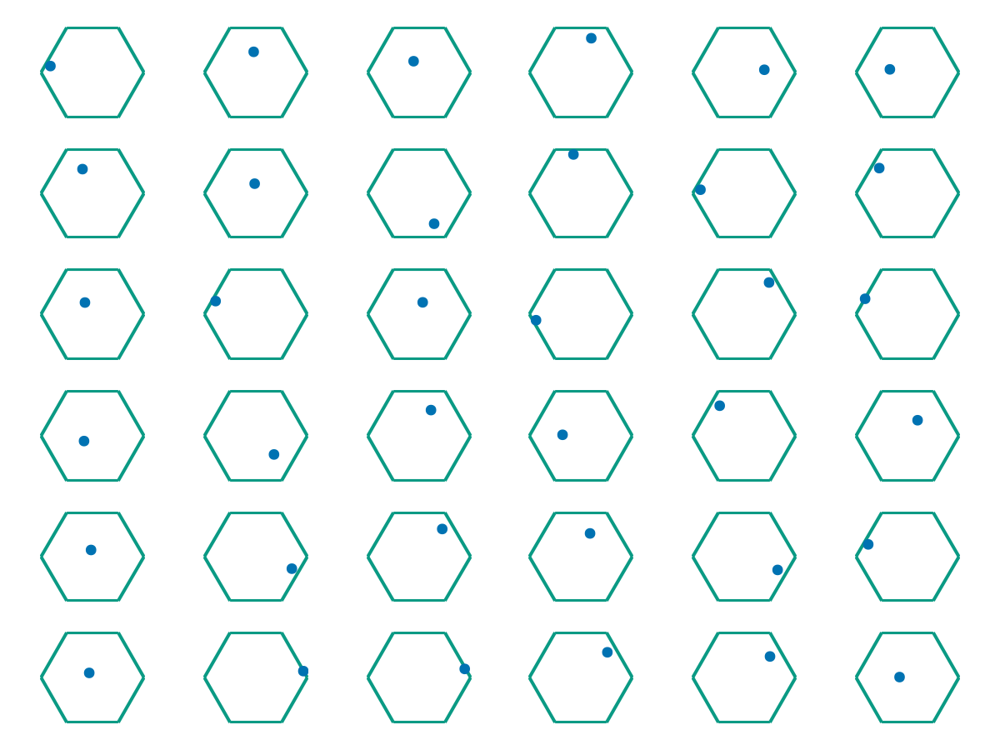
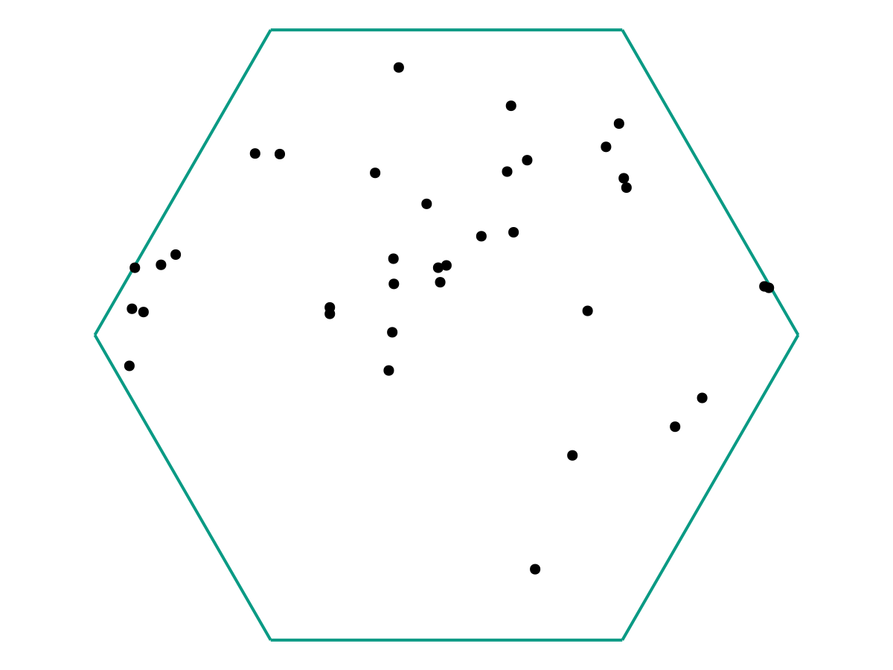
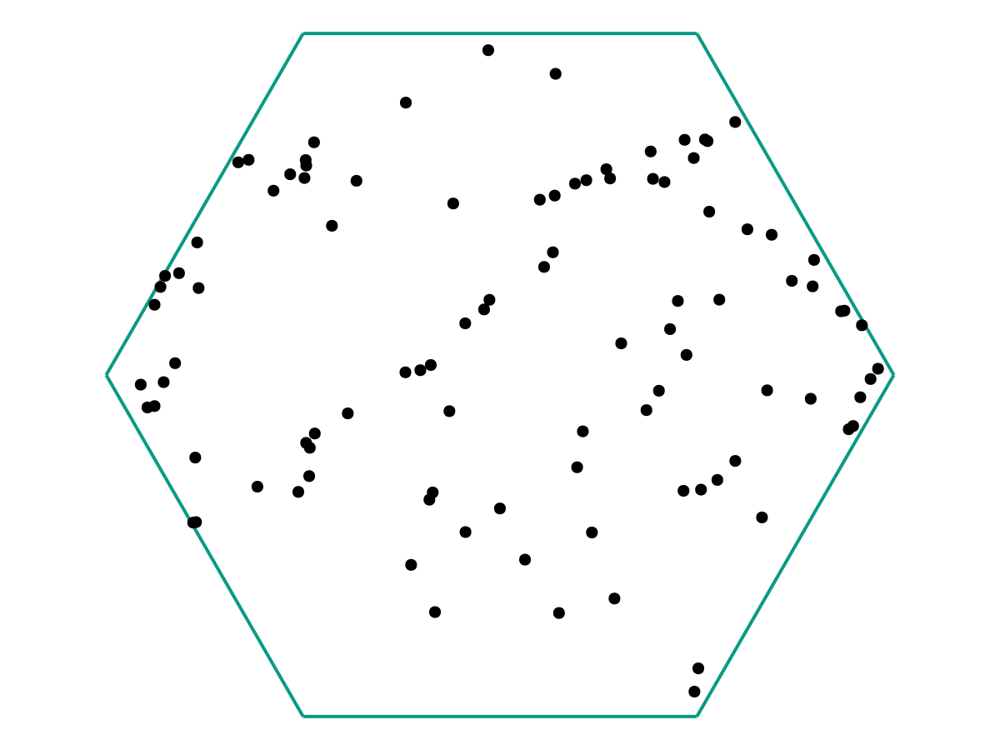
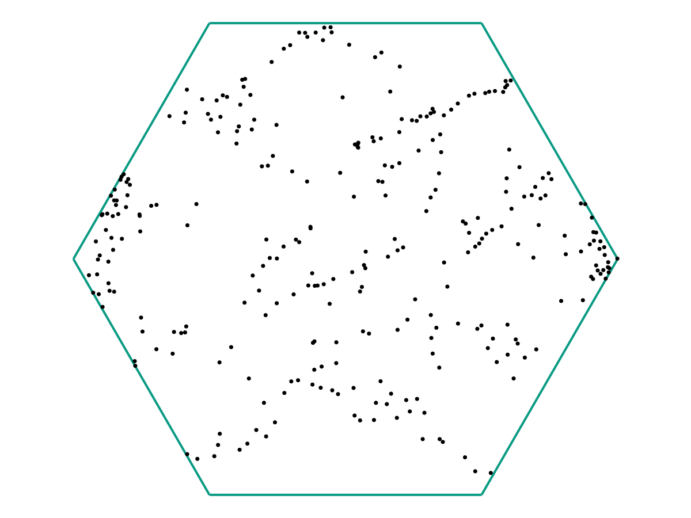
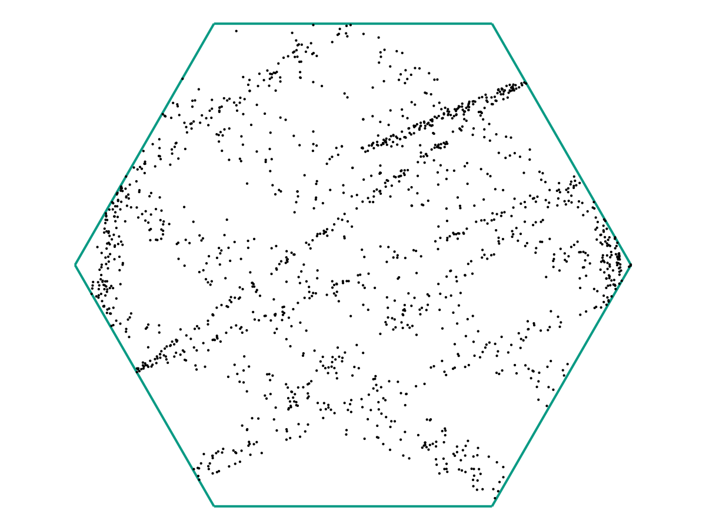
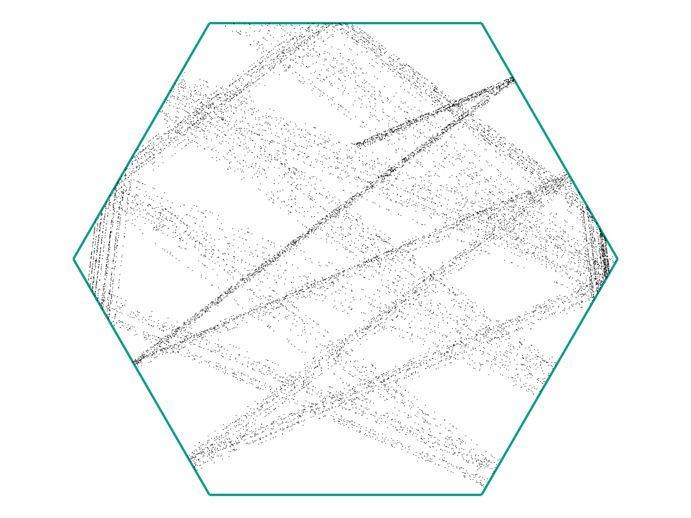
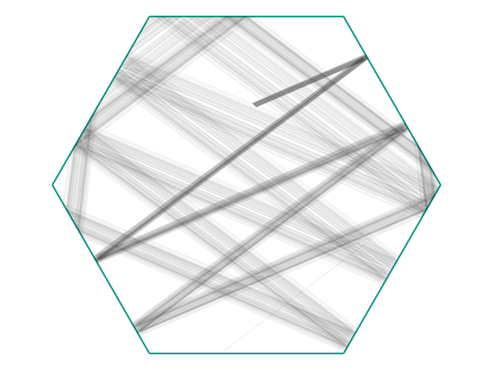

Motivation for Trajectory Inference Problems
Example: A Hexagonal Billiards Table
Suppose you run an experiment that involves collecting data points \(\{\omega_1, \ldots, \omega_M\} \subseteq \Omega \subseteq \mathbb R^d\). As an example, suppose that \(\Omega\) is the hexagonal domain below, and the \(\omega_i\) represent positions of \(M\) independent, non-interacting particles in \(\Omega\) (all collected simultaneously).

The question is: Just from the position data \(\{\omega_1, \ldots, \omega_M\}\) we have collected, can we determine 1) Whether the particles are all evolving according to the same dynamics, and 2) If so, what those dynamics are? As a sanity check, we can first try superimposing all of the data in one plot.

From the image above, there appears to be no discernable structure. But as we increase our number of samples \(M\), a picture starts to emerge.

and again:



In the limit as \(M \to \infty\), we might obtain a picture like the following:

We see that once \(M\) is large, it becomes (visually) clear that the particles are indeed evolving according to the same time-dependent function \(f : \mathbb R \to \Omega\), but with 1) Small noise in the initial conditions, and 2) Different initial “offsets” \(t_i\) along \(f(t)\).
To expand on (1) a bit more: Note that in the figure above, there’s a fairly-clear “starting” point where the dark grey lines are all clumped together. Let’s say that this represents \(f(0)\). Then we see that the trajectories we observe (call them \(f_i\)) appear to look like they’re governed by the same principles, but with \[f_i(0) = f(0) + \text{ noise} \qquad \text{and} \qquad f_i'(0) = f'(0) + \text{ noise}.\] Together with (2), we see that our observations \(\omega_i\) are really samples from \(f_i(t_i)\). The question is how we may use these samples to recover \(f(t)\).
Let us summarize the information so far.
Summary: The Trajectory Inference Problem
Suppose you have a time-dependent process modeled by some function \(f : [0,T] \to \Omega\), where \(\Omega \subseteq \mathbb R^d\) (or, more generally, an abstract metric space). Then, given observations \[\omega_i = f_i(t_i)\] where the \((f_i, t_i)\) are hidden, how can we estimate \(f(t)\)?
This Is Not Regression!
Note that the problem above might at first look very similar to a regression problem, where one attempts to use data points \((X_i, Y_i)\) to determine a hidden model \(f\) (subject to some noise \(\varepsilon_i\)) giving \[Y_i = f(X_i) + \varepsilon_i.\] If we let \(f_i(X) = f(X) + \varepsilon_i\), then we an almost-identical setup \[Y_i = f_i(X_i).\] The key distinction is that in regression, we assume our data-collection procedure gives us pairs \((X_i, Y_i)\), whereas in the trajectory inference problem our data consists of only the \(Y_i\) and we must infer the \(X_i\) on our own. Note in particular that we have continuum many choices for \(X_i\). This ends up massively complicating the the problem: If we try the trajectory-inference analogue of regularized least squares, the lack of an a priori coupling between \(X_i\) and \(Y_i\) means we lose the convexity structure and must use both different theoretical analysis and different numerical algorithms.
Nevertheless, on a cosmetic level, we may formulate the problems with similar-looking equations. This brings us to regularized principal curves.
(Penalized) Principal Curves
We consider the following problem. Given: 1) An interval \(X \subseteq \mathbb{R}\), 2) A set \(\Omega \subseteq \mathbb{R}^d\), 3) A data distribution \(\mu\) on \(\Omega\), 4) A number \(p \geq 1\), 5) A functional \(\mathscr C\) quantifying the “complexity” of maps \(f : X\to \Omega\), and 6) A fixed parameter \(\lambda > 0\), We want to solve \[\min_{f} \int_{\Omega} (d(\omega, f))^p \ d\mu(x) + \lambda \mathscr C(f).\]
Special Case: Empirical Distributions
Note that when \(\mu\) is an empirical distribution on observed data points \(\omega_1, \ldots, \omega_M\), this becomes \[\min_{f} \frac{1}{M} \sum_{i=1}^M (d(\omega_i, f))^p+ \lambda \mathscr C(f).\] Further taking \(p=2\) and denoting \(y_i = \mathrm{argmin}_{y \in \mathrm{image}(f)} d(\omega_i, y)\), we can write it as \[\min_{f} \frac{1}{M} \sum_{i=1}^M \lvert \omega_i - y_i\rvert^2+ \lambda \mathscr C(f),\] whence we recover the relationship with regularized least squares.
Project Proposal
Unfortunately, I do not have any results to show yet, as so far I have mainly been adapting the numerical algorithm from our paper (see sec. 5.3) to be compatible with the data pipeline used by Qiyu. This required a large number of algorithmic innovations, which (hopefully) I will detail in an update to this post in the future.
However, broadly speaking, the idea is to replace the motion recovery step in Qiyu’s post with these principal curves tools, which we hope will yield a significant runtime improvement.